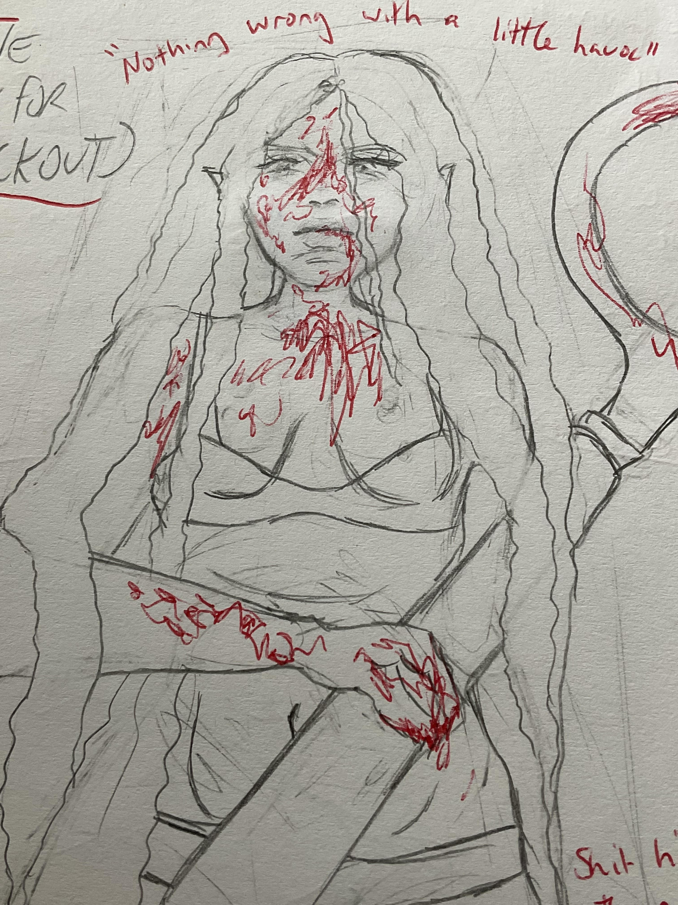
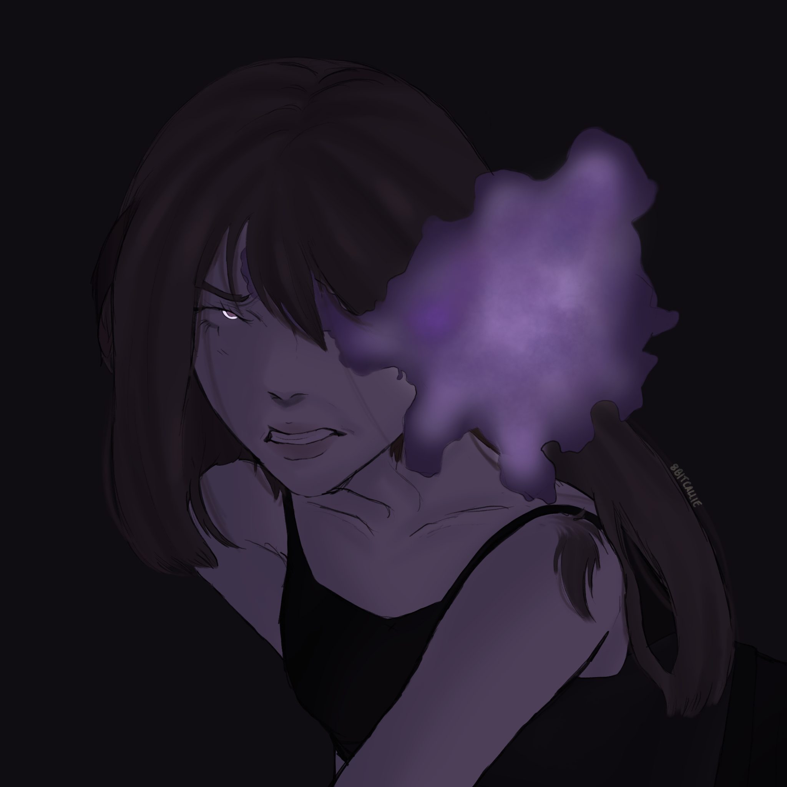
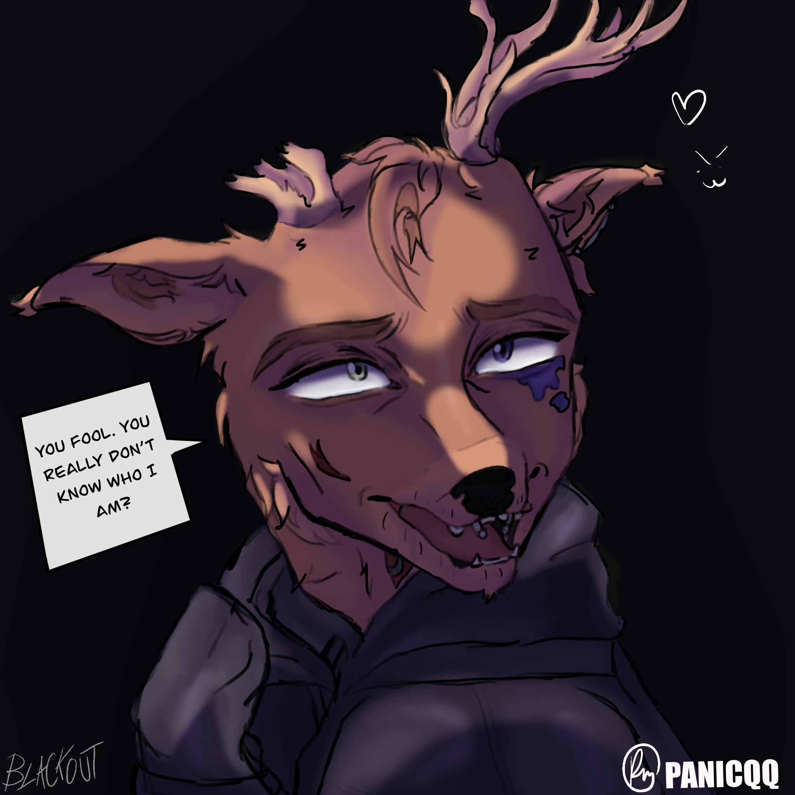

Concepts
This first image is my most recent concept and is from a certain scene where Darcy is with her sword. She was on a "mission" to find the three cult leaders, and followers of her uncle Zephyr. These leaders were all Zephyr's fellow hunters reincarnated. One of them being reincarnated into a leader who owns a night club. I guess you can tell what happened to the leader. For Darcy's character I took a lot of inspiration for her backstory from Michael Afton from FNAF, Sunny/OMORI from OMORI, Shoya from a Silent voice and Link from TLOZ. Her personality and style inspiration is from Maddi Perez from Euphoria and Marceline from Adventure Time.

This scene represents the fight of the famous hunter Zayn and Queen Athena of the mythical hidden lands on Phillip Island, Victoria. The hideout was close to a treehouse and near the waters of the islands. their deaths ended the war.

Being a psychological-fantasy horror, blood does come in to play quite a bit. This is a concept sketch I made before the artwork of the enemies. Queen Athena's design is inspired by Queen Sonia from The legend of Zelda: Tears of the Kingdom.

This is one of the cult leaders Tate. She is the manipulative nightclub owner and reincarnation of one of Zephyr's hunters Nathan. She is inspired by Eva from the series SWARM (Played by Billie Eilish) and Jocelyn from the series The Idol (played by Lily-Rose Depp)

As you can tell, these two don't get along. When Darcy is sent to a corretional facility, she meets one of her old enemies Charlotte. This concept was used to draw a concept of Charlotte as well.

While she has her true pop-star and R&B artist ego, Amber works for SKF and studies witchery. This is one of her special recipes!

Amber Kyli, the Secretary bird pop-star and her album DEPTH. Amber Kyli is inspired by famous R&B singers The Weeknd (Abel Tesfaye) and SZA (Solana Imani Rowe)

the day of Darcy and Olivia's dance concert.They were only 12 years old! This night they were doing their first duet together. They were about to get ready for their costumes. look how excited they were!

Darcy's cousin who passed away and is Zephyr's first daughter. She was killed brutally on the night of Darcy and her's dance concert.

Artwork of Zephyr that was in progress for this shot and was for a school project.

An old artwork concept of Zephyr in his deer form. or him I took lots of inspiration from The riddler in The Batman 2022 and William Afton/ Dave Miller in the Five Night's at Freddy's graphic novels.
